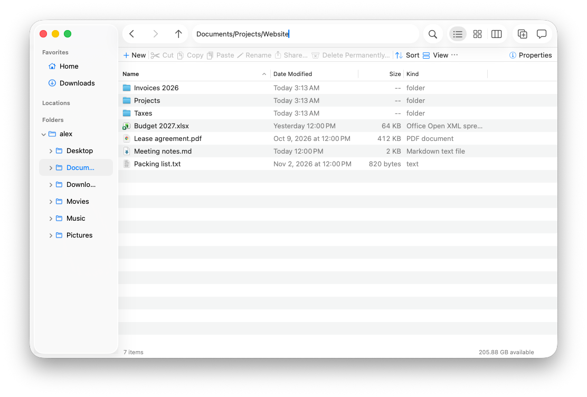
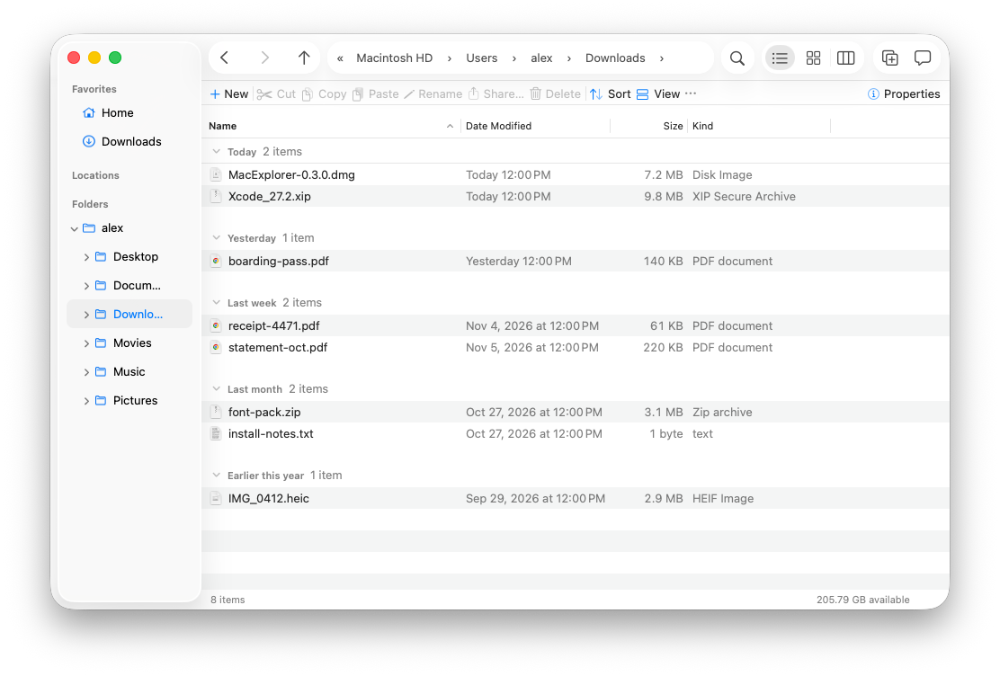

MacExplorer
nouna file manager for the Mac that speaks Explorer.
- A native macOS app for people who learned files on Windows. “I hit ⌘X on a file and it actually moved.”
- Finder, with the parts of File Explorer you keep reaching for: cut and paste, an address bar you can type in, a folder tree.

Phrasebook
What you want to do, and how to say it.
Move files
Take them from here, put them there.
⌘X does nothing on files. Copy with ⌘C, then hold Option and choose Move Item Here (⌥⌘V).
⌘X, then ⌘V. Cut files show greyed until you paste them. Esc cancels.

Go to a folder
You know the path. You want to type it.
The path bar is read-only. Go › Go to Folder (⇧⌘G) opens a separate sheet.
Click the address bar, or press ⌘L, and type. Paste a path, use ~, get suggestions. Every part of the path has a menu of its sibling folders.

See where you are
The whole tree, not just favourites.
The sidebar is a flat list of favourites. For a tree, switch the whole window to List or Columns.
A folder tree under the sidebar that opens to the folder you're in and expands as you go.
Find what's big
Which folder is eating the disk?
Folders show --. “Calculate all sizes” is in View Options, and slow.
View › Calculate Folder Sizes. Sizes fill in from a background scan, are cached, and stay current as files change. Sort by Size uses them.
Copy a path
For a terminal, a ticket, a chat.
Hold Option in the context menu for Copy as Pathname.
Copy Path As ▸ POSIX path (⇧⌘C), ~ path, file URL, name, or quoted for the shell.
Make a new file
An empty text file, right here.
New Folder only. Open an editor, save, pick the folder.
New ▸ Text File from the command bar or the context menu, named and ready to rename.
Sort out Downloads
What came in today, this week, last month.
Use Groups, then choose a grouping. Fine, but folders forget their view when .DS_Store files get lost.
View › Group By › Date Modified. Each folder remembers its own view, stored by MacExplorer, never in .DS_Store files on shared drives.

Use the mouse
The side buttons and the wheel click.
Back and forward mouse buttons do nothing.
Mouse back and forward go back and forward. Middle-click a folder to open it in a new tab. Right-drag asks Copy, Move or Alias.
Check a folder
Size, contents, permissions.
Get Info, one window per item, size computed when it gets to it.
Properties (⌘I or ⌥↩) with a live size and file count, and a Permissions tab.
A note on why
Plenty of people use a Mac at home and Windows at work, or moved over after twenty years of File Explorer. Finder is good at many things, but a few habits never transfer: cut and paste does nothing, the path can't be typed, there's no tree to see where you are.
MacExplorer keeps what the Mac does well and borrows the Explorer ideas that make files easier to handle. It's a native AppKit app, so it looks like it belongs on macOS 26, and it's built to stay fast in folders with 100,000 files.
Words that mean the same
The Mac habits stay where they are.
Quick Look, with the arrow keys to move through files.
As in Finder. Prefer Explorer's Return-opens? It's a setting. F2 renames too.
With undo, like every other file operation.
Details, Icons and Columns views.
Native macOS tabs. ⌘T, ⌃Tab, drag a folder onto ＋.
Finder tags, the macOS 26 sidebar and toolbar, dark mode.
Not in this edition
What MacExplorer can't do.
- It can't replace Finder system-wide. “Show in Finder” in other apps, the Dock icon and Open/Save panels still use Finder. macOS has no public way to change that.
- Cut in MacExplorer and paste in Finder makes a copy. Drag instead, or use Finder's ⌥⌘V.
- No Libraries, drive letters or macOS versions before 26.